Rearrangements: Blocks, Connectors, and Derivative Chromosomes
Source:vignettes/derivatives.Rmd
derivatives.RmdRearranged chromosomes are drawn as rows of blocks: a reference row
on top and one row per derivative chromosome below it. This vignette
builds that view from generic elements on toy data, then draws full
reconstructions from a table set with
seq_rose_derivatives().
library(SeqPlotR)
#>
#> Attaching package: 'SeqPlotR'
#> The following object is masked from 'package:base':
#>
#> %||%
library(GenomicRanges)
#> Loading required package: stats4
#> Loading required package: BiocGenerics
#> Loading required package: generics
#>
#> Attaching package: 'generics'
#> The following objects are masked from 'package:base':
#>
#> as.difftime, as.factor, as.ordered, intersect, is.element, setdiff,
#> setequal, union
#>
#> Attaching package: 'BiocGenerics'
#> The following objects are masked from 'package:stats':
#>
#> IQR, mad, sd, var, xtabs
#> The following objects are masked from 'package:base':
#>
#> anyDuplicated, aperm, append, as.data.frame, basename, cbind,
#> colnames, dirname, do.call, duplicated, eval, evalq, Filter, Find,
#> get, grep, grepl, is.unsorted, lapply, Map, mapply, match, mget,
#> order, paste, pmax, pmax.int, pmin, pmin.int, Position, rank,
#> rbind, Reduce, rownames, sapply, saveRDS, table, tapply, unique,
#> unsplit, which.max, which.min
#> Loading required package: S4Vectors
#>
#> Attaching package: 'S4Vectors'
#> The following object is masked from 'package:utils':
#>
#> findMatches
#> The following objects are masked from 'package:base':
#>
#> expand.grid, I, unname
#> Loading required package: IRanges
#> Loading required package: SeqinfoBlocks
seq_block() draws one box per range. The data is a
GRanges whose seqnames are the window each block sits in.
map() supplies the reference interval each block shows
(chrom, ref_start, ref_end), a
label, a flipped flag and a fill
key. The default fill is a solid colour per key, tinted by
tint.
blk <- GRanges("der1", IRanges(c(1, 3e7, 6e7), c(3e7, 6e7, 1.2e8)),
label = c("A", "B", "C"), flipped = c(FALSE, TRUE, FALSE),
tint = 1:3, ref_start = c(0, 3e7, 6e7), ref_end = c(3e7, 6e7, 1.2e8),
cs = c(NA, NA, 9e7), ce = c(NA, NA, 9.5e7))
bm <- map(label = label, flipped = flipped, tint = tint, chrom = "chr1",
ref_start = ref_start, ref_end = ref_end,
centromere_start = cs, centromere_end = ce)
print(seq_plot() %+%
seq_track(windows = GRanges("der1", IRanges(1, 1.2e8)), aesthetics = aes(axis.x.visible = FALSE)) %+%
seq_block(blk, bm))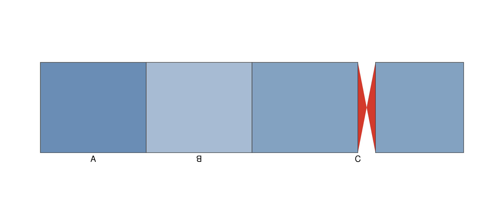
With fill = "cytoband" the reference interval is filled
with the cytoband pattern (the bundled hg38 bands unless
cytobands is given). Flipped blocks are mirrored, and a
centromere interval is drawn as a bowtie.
print(seq_plot() %+%
seq_track(windows = GRanges("der1", IRanges(1, 1.2e8)), aesthetics = aes(axis.x.visible = FALSE)) %+%
seq_block(blk, bm, fill = "cytoband"))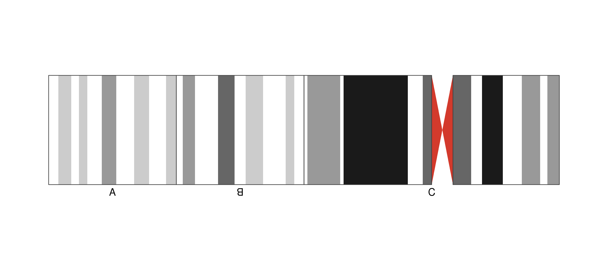
Labels and flipped blocks
label_inside in map() places a label inside
its block when it fits. flip_style marks flipped blocks by
rotating the label, drawing an overline, or adding a minus sign.
blk$label_inside <- TRUE
bm2 <- map(label = label, flipped = flipped, tint = tint, chrom = "chr1",
ref_start = ref_start, ref_end = ref_end, label_inside = label_inside)
p <- seq_plot()
for (st in c("rotate", "overline", "minus")) {
p <- p %+% seq_track(track_id = st, direction = "under",
windows = GRanges("der1", IRanges(1, 1.2e8)),
aesthetics = aes(axis.x.visible = FALSE)) %+%
seq_block(blk, bm2, flip_style = st) %+%
seq_track_label(st)
}
p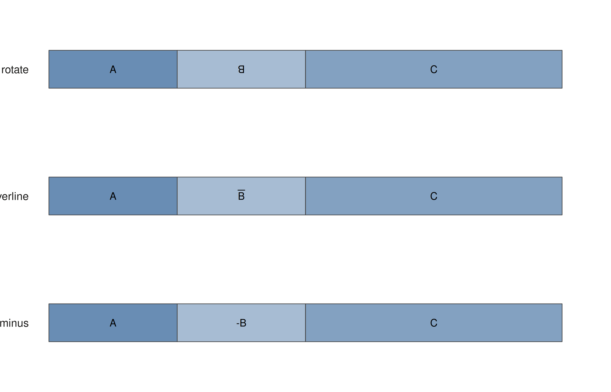
Annotations
annotations takes a data frame with chrom,
start and label; each row is drawn on every
block whose reference interval contains it, mapped through flips.
strand adds a direction arrow.
ann <- data.frame(chrom = "chr1", start = c(1.5e7, 4.5e7), end = c(NA, 5.5e7),
label = c("geneX", "geneY"), strand = c("+", "-"))
print(seq_plot() %+%
seq_track(windows = GRanges("der1", IRanges(1, 1.2e8)), aesthetics = aes(axis.x.visible = FALSE)) %+%
seq_block(blk, bm, annotations = ann))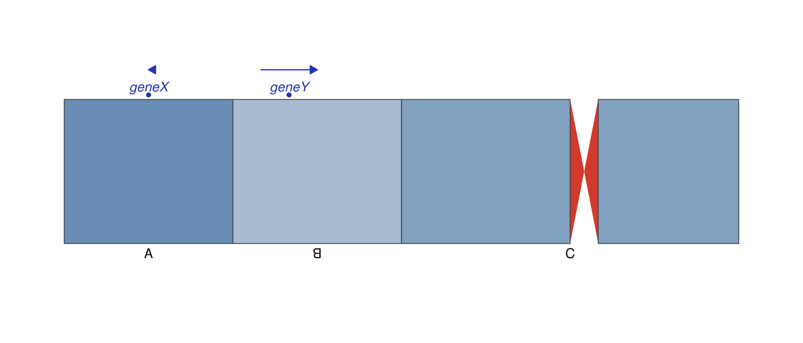
Arrow blocks (shape = "arrow") point toward increasing
reference coordinate and reverse when flipped.
print(seq_plot() %+%
seq_track(windows = GRanges("der1", IRanges(1, 1.2e8)), aesthetics = aes(axis.x.visible = FALSE)) %+%
seq_block(blk, bm, shape = "arrow"))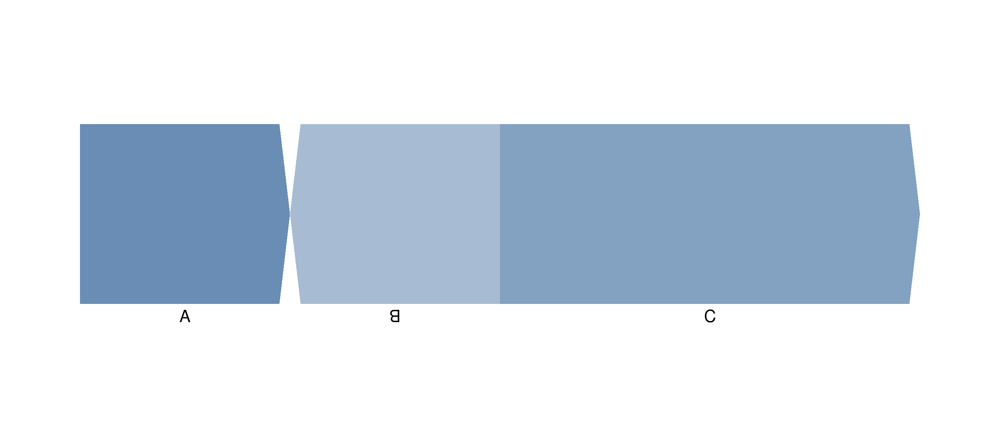
A shared base-pair scale
Rows of different lengths line up when each track sets
x_span = "shared". Every window is placed at its own
coordinates on the union span, so base pairs per unit width are equal in
every row, and gaps between windows follow the coordinates.
ref <- GRanges("chr1", IRanges(1, 1.2e8), label = "chr1", ref_start = 0, ref_end = 1.2e8)
der <- GRanges("der1", IRanges(c(1, 3e7), c(2.5e7, 1e8)), label = c("A", "B"),
ref_start = c(0, 3e7), ref_end = c(2.5e7, 1e8))
mp <- map(label = label, chrom = "chr1", ref_start = ref_start, ref_end = ref_end)
margins <- list(top = 0, bottom = 0, left = 0.13, right = 0.02)
tk <- function(id, w) seq_track(track_id = id, direction = "under", windows = w, x_span = "shared",
track_outer_margin = margins, track_inner_margin = 0,
window_outer_margin = 0, window_inner_margin = 0,
aesthetics = aes(axis.x.visible = FALSE))
p <- seq_plot(plot_margin = 0.02) %+%
tk("ref", GRanges("chr1", IRanges(1, 1.2e8))) %+% seq_block(ref, mp) %+% seq_track_label("chr1") %+%
tk("der", GRanges("der1", IRanges(c(1, 3e7), c(2.5e7, 1e8)))) %+% seq_block(der, mp) %+%
seq_track_label("der(1)", sublabel = "toy")
p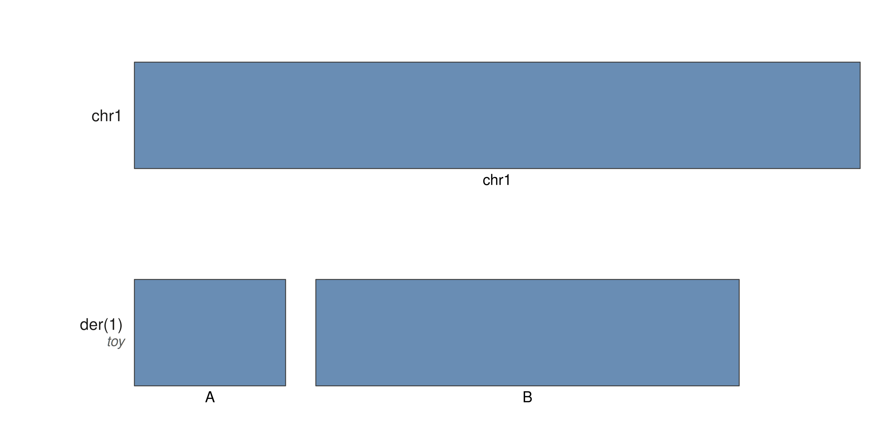
Connectors, ribbons, and captions
seq_connector() joins block edges: within a row it draws
a stemmed bulge, across rows a curve between facing edges.
side0/side1 choose the left or right edge, and
style picks a line style. Defaults exist for
junction, inferred and unused.
seq_synteny() accepts twisted (swaps the
target corners for inversions), smooth (smoothstep sides)
and layer = "below" (drawn under the blocks).
seq_caption() adds text below the plot, with an optional
banner.
cn <- data.frame(chrom0 = "der1", x0 = c(1, 1), x0_end = c(2.5e7, 2.5e7), side0 = c("right", "left"),
chrom1 = "der1", x1 = c(3e7, 3e7), x1_end = c(1e8, 1e8), side1 = c("left", "right"),
kind = c("junction", "unused"), bulge = TRUE)
syn <- data.frame(chrom0 = "chr1", chrom1 = "der1", x0 = c(1, 3e7), x0_end = c(2.5e7, 1e8),
x1 = c(1, 3e7), x1_end = c(2.5e7, 1e8), fill = c("#4E79A7", "#F28E2B"),
twisted = c(FALSE, TRUE))
print(p %+%
seq_synteny(syn, map(x0 = x0, x0_end = x0_end, x1 = x1, x1_end = x1_end, chrom0 = chrom0,
chrom1 = chrom1, fill = fill, twisted = twisted),
t0 = "ref", t1 = "der", height = 0.5, smooth = TRUE, layer = "below",
aesthetics = aes(alpha = 0.6, color = NA)) %+%
seq_connector(cn, map(x0 = x0, x0_end = x0_end, chrom0 = chrom0, side0 = side0, x1 = x1,
x1_end = x1_end, chrom1 = chrom1, side1 = side1, style = kind, bulge = bulge),
t0 = "der", t1 = "der", show_legend = FALSE) %+%
seq_caption("Toy example", banner = "APPROXIMATE"))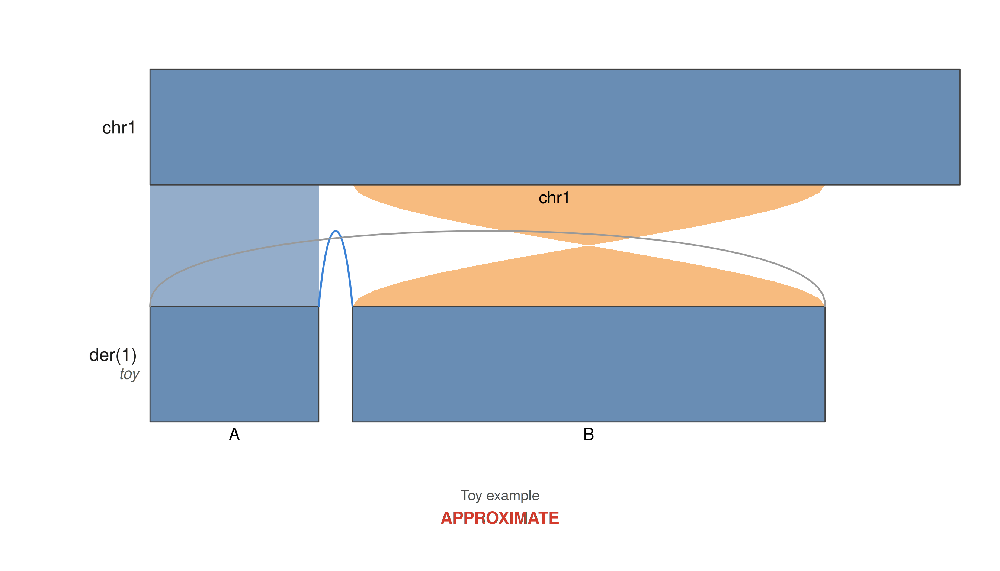
Reading a table set
seq_read_table_set() reads a versioned set of tables
from a directory of <prefix>.<table>.tsv files,
or from a list of data frames carrying a schema_version.
Cells are typed from the columns.tsv manifest, and
unsupported versions or missing columns stop with a message naming the
set. The package ships reconstructions as table sets under
extdata/rose/derivatives.
root <- system.file("extdata", "rose", "derivatives", package = "SeqPlotR")
head(list.files(root), 4)
#> [1] "bfb_c1_block" "bfb_c1_block_ref" "bfb_c1_walk" "bfb_c2_block"
s <- seq_read_table_set(file.path(root, "inv_block"), "plot_derivatives")
names(s)
#> [1] "rows" "blocks" "connectors" "ribbons" "windows"
#> [6] "caption"
s$rows[, c("row_id", "kind", "label")]
#> row_id kind label
#> 1 1 reference chr1
#> 2 2 derivative der(1)Derivative reconstructions
seq_rose_derivatives() turns a
plot_derivatives table set (as produced by the ROSE
package) into a plot, with one track per row, junction connectors,
optional ribbons and the caption. It only maps table columns onto the
elements above, and the result is an ordinary SeqPlot.
seq_rose_derivatives(file.path(root, "inv_block"))$plot()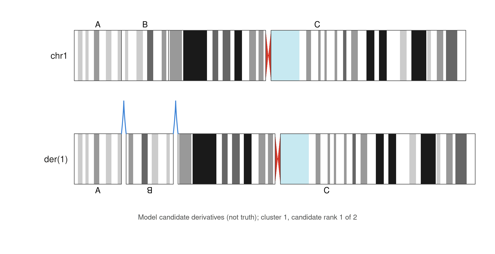
synteny = TRUE adds ribbons from the reference to each
derivative row. Twisted ribbons show inverted segments. Window gaps
follow the coordinates in the reference layout.
seq_rose_derivatives(file.path(root, "chromoplexy_block_ref"), synteny = TRUE)$plot()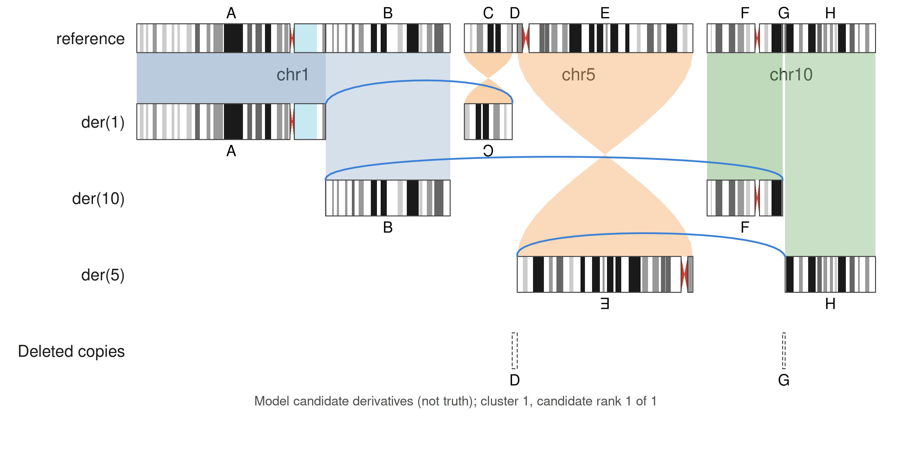
Walk fixtures include loose derivative rows.
show_loose = FALSE drops them together with the rows that
continue them.
walk <- file.path(root, "bfb_c1_walk")
seq_rose_derivatives(walk)$plot()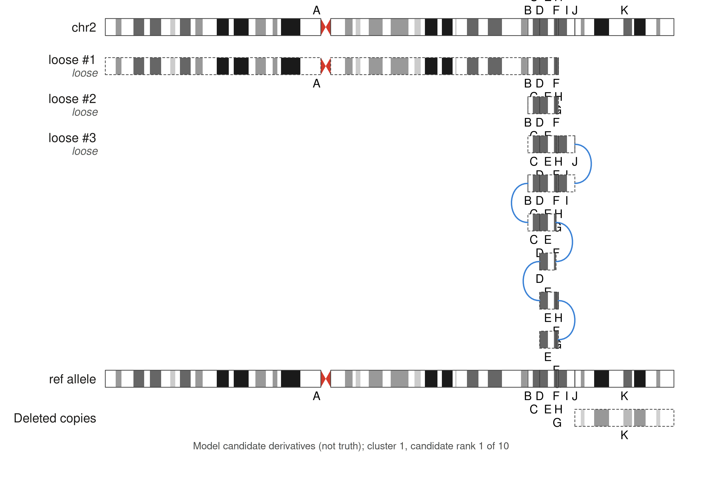
seq_rose_derivatives(walk, show_loose = FALSE)$plot()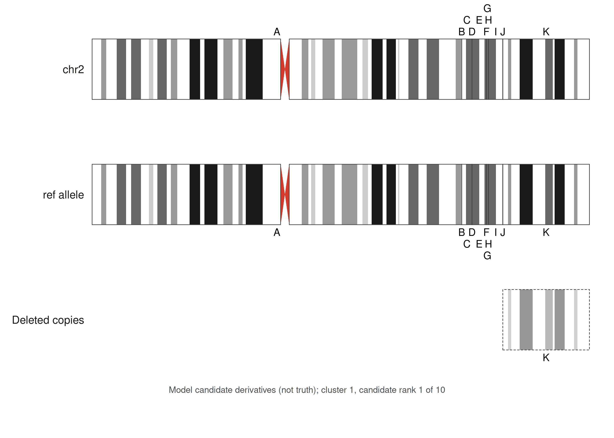
Cluster fixtures add copy number tracks above the rows and draw candidate strips as arrows.
seq_rose_derivatives(file.path(root, "ct18_cluster"),
synteny = TRUE)$plot()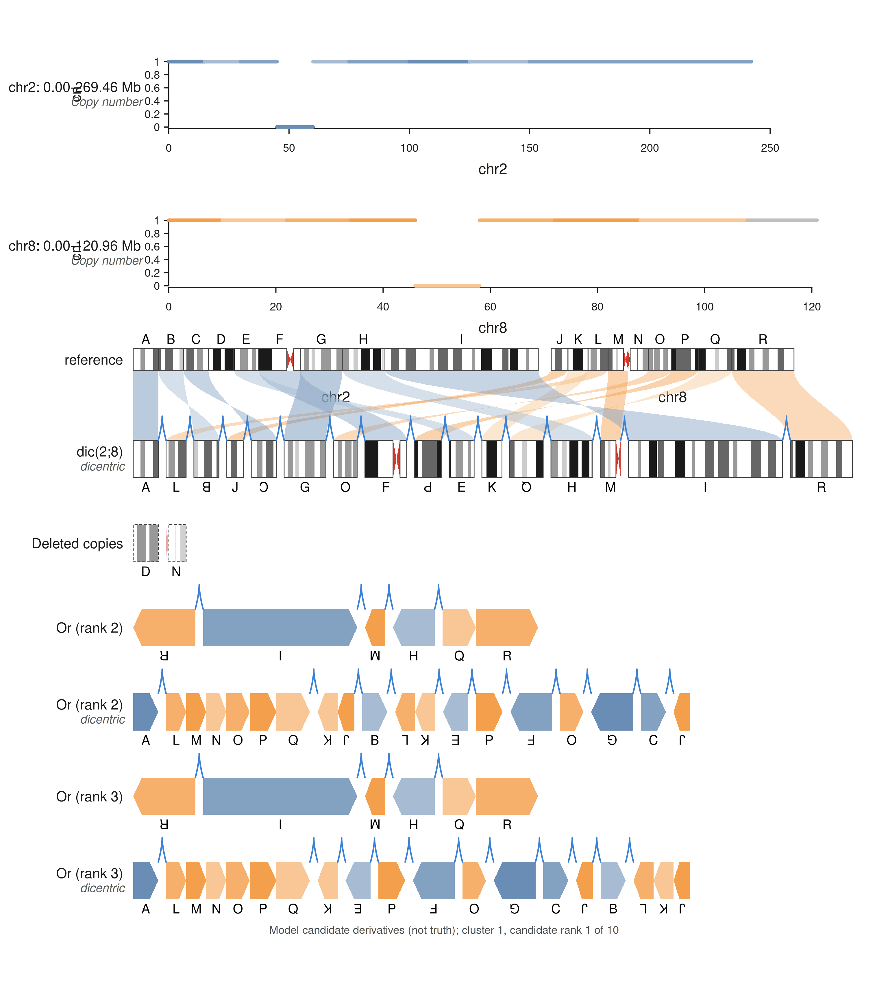
Solid fills use the default palette, or
palette = "soft", or a vector named by block key.
block_colors overrides by label, and
label_inside = TRUE puts labels inside blocks that are wide
enough.
seq_rose_derivatives(file.path(root, "inv_block"), fill = "solid",
palette = "soft", label_inside = TRUE, flip_style = "minus")$plot()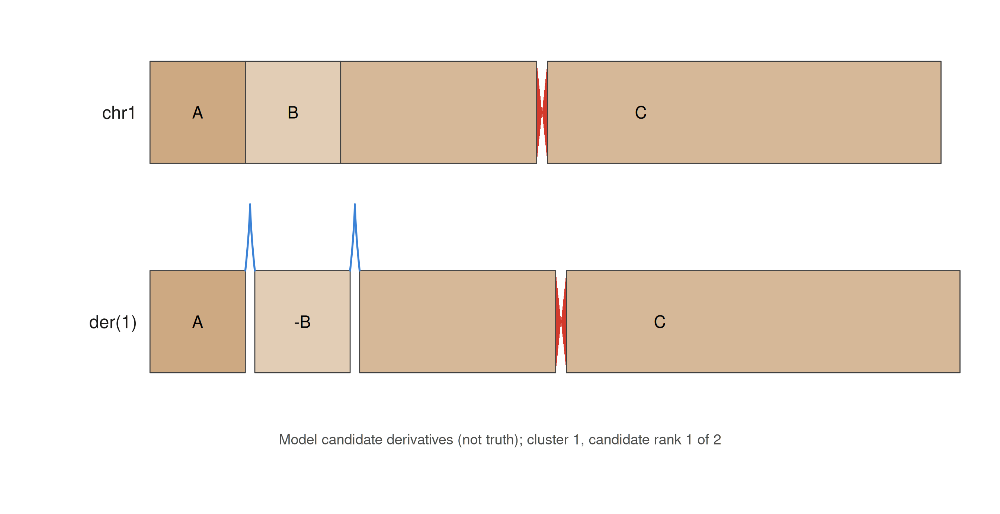
Because the result is a SeqPlot, further elements can be
added with %+%.